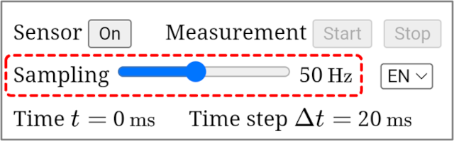
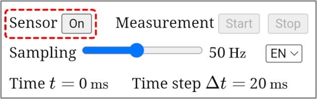
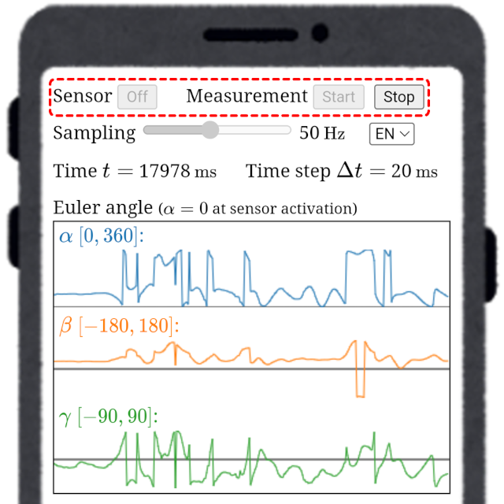
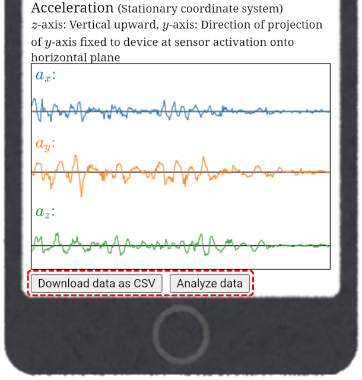
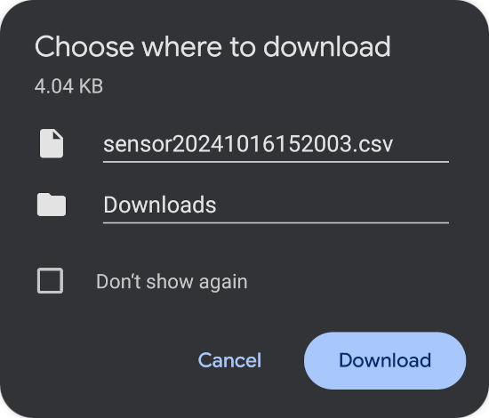
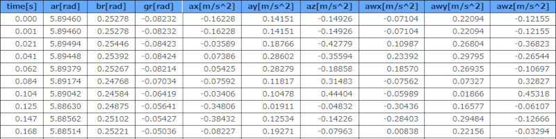
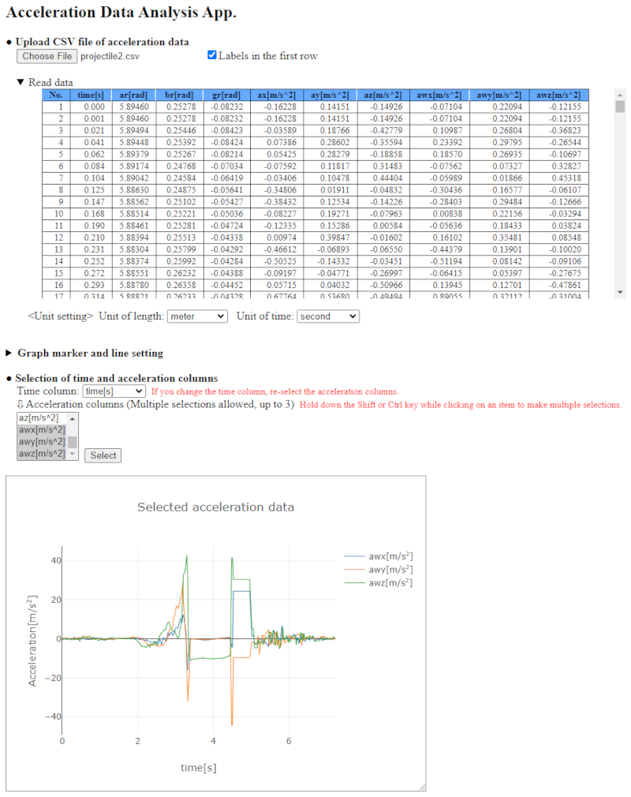
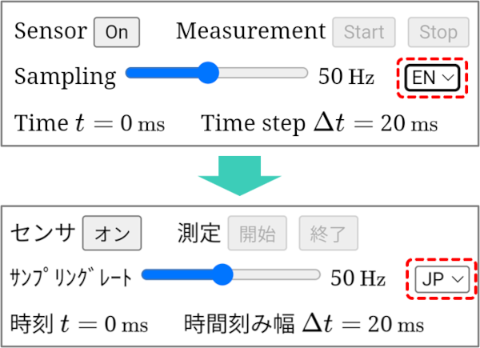

-
Setting of sampling rate

Use the slider bar to set the sampling rate within the range of 10 Hz to 100 Hz. In the case of 50 Hz, data is measured 50 times per second (time step Δt = $\frac{1000}{50}$ = 20 ms). The sampling rate must be set before activating the sensor.
-
Sensor activation

When the sensor 'On/Off' button displays 'On', the sensor is in a diactivated state, and the measurement 'Start' and 'Stop' buttons are disabled (cannot be pressed). In this state, pressing the sensor 'On' button activates the sensor, the button label changes to 'Off', and the measurement 'Start' button becomes enabled. Once the sensor is activated, the graphs of temporal changes of Euler angles and accelerations are displayed (data is not yet being recorded in this state). If the sensor 'Off' button is pressed while the sensor is active, the sensor is diactivated and the measurement 'Start' button is disabled. The sampling rate cannot be changed while the sensor is active.
Screen during sensor activation

-
Starting measurement
When the measurement 'Start' button is pressed while the sensor is active, the measurement begins and data is recorded. In this state, the measurement 'Start' button and the sensor 'Off' button are disabled, while the measurement 'Stop' button becomes enabled. Once the measurement starts, the value of time t increases with the passage of time. The time increases approximately by increments of the time step Δt, but there may be some errors depending on the accuracy of the sensor.
Screen during data measurement

-
Stopping measurement
When the measurement 'Stop' button is pressed during data measurement, the measurement ends, the measurement 'Stop' button is disabled, and the measurement 'Start' button and sensor 'Off' button become enabled. Note that in this state, pressing the measurement 'Start' button will erase the recorded data and start a new measurement. When the measurement is finished and data has been recorded, it is possible to download the data or access the data analysis application.
-
Download data
Scrolling down the measurement app screen, there are 'Download data as CSV' button and 'Analyze data' button at the bottom, and these buttons become active when the measurement is finished.
Bottom of screen

When you press the 'Download Data as CSV' button, a save destination selection dialog will appear, allowing you to specify the file name and save location to save the measurement data in CSV format (the default file name will be 'sensor + date and time.csv').
Save destination selection dialog

The first row of the data saved in CSV format is the label row. The columns of the data are as follows: the first column is the time column (label: time[s]), the 2nd to 4th columns are the Euler angles α, β, and γ (labels: ar[rad], br[rad], gr[rad]), the 5th to 7th columns are the x, y, z components of the acceleration in the device-fixed coordinate system (labels: ax[m/s^2], ay[m/s^2], az[m/s^2]), and the 8th to 10th columns are the x, y, z components of the acceleration in the stationary coordinate system (labels: awx[m/s^2], awy[m/s^2], awz[m/s^2]).
Example of measurement data

If you send the downloaded measurement data to your PC using the file sharing on your smartphone, you can analyze the data on your PC.
-
Data analysis
After completing the measurement, pressing the 'Analyze Data' button at the bottom of the measurement app screen will take you to
Acceleration Analysis App, where you can immediately analyze the measurement data.
Acceleration Analysis App screen on PC

-
Language selection

You can switch the display language of the app by selecting either English (EN) or Japanese (JP) from the language selection menu at the top of the measurement app screen (currently, only English and Japanese are available).